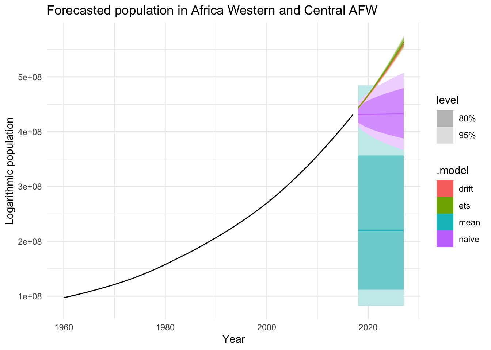

library(fpp3)
library(tidyverse)
library(kableExtra)
library(ggplot2)ETC 5550 Assignment 3
1 Libraries
2 Data
Code
set.seed(32779267)
pop <- readr::read_rds("https://bit.ly/monashpopulationdata") |>
filter(Country == sample(Country, 1))
pop %>% head() %>% kbl()| Country | Code | Year | Population |
|---|---|---|---|
| Africa Western and Central | AFW | 1960 | 97256290 |
| Africa Western and Central | AFW | 1961 | 99314028 |
| Africa Western and Central | AFW | 1962 | 101445032 |
| Africa Western and Central | AFW | 1963 | 103667517 |
| Africa Western and Central | AFW | 1964 | 105959979 |
| Africa Western and Central | AFW | 1965 | 108336203 |
Table 1 illustrates the timeseries data for the country “Africa Western and Central AFW” which shall be analysed in the upcoming sections.
3 Exercises
3.1 Splitting data into train-test data and fitting benchmark models.
Let us first visualise the population growth for the country “Africa Western and Central AFW”.
Code
pop %>% autoplot() + theme_minimal() +
labs(title = "Population growth in Africa Western and Central AFW")
Key takeaway
As we can observe in Figure 1, the population in Africa and Central AFW has grown at an exponential rate.
We shall transform our data such that the overall trend of the data is linear. In this regard, we shall apply a logarithmic transformation of our data.
Code
pop %>% autoplot(log(Population)) + theme_minimal() +
labs(title = "Logarithmic population growth in Africa Western and Central AFW",y = "Log of population")As we can now observe through Figure 2, upon performing the logarithmic transformation, we can observe a linear trend in the growth rate.
In the next step, we shall split our data into train and test data. The split is formed on the following basis:
- Population data for the years before 2018 will be used as the train dataset
- Population data for the years 2018 - 2022 will be used as the test dataset
pop_train <- pop %>% filter(Year < 2018) # Train dataset
pop_test <- pop %>% filter(Year >= 2018) # Test datasetüõ†‚öôÔ∏èüõìÔ∏è
Now that we have transformed our data and split it based on training and testing dataset, we will utilise the benchmark models to forecast the logarithmic population growth. The models which will be used are as follows:
- ETS (Error Trend Seasonality) model
- Naïve model
- Mean model
- Drift model
Note
As our data does not contain a seasonality component, hence we shall not fit a seasonal naïve benchmark model.
model_fit <- pop_train %>% model(ets = ETS(log(Population)), # ETS Model
naive = NAIVE(log(Population)), # Naïve model
mean = MEAN(log(Population)), # Mean model
drift = RW(log(Population) ~ drift())) # Drift modelOnce we have fitted our training data on the ETS model and the benchmark models, we will check the peformance of each of these models.
Code
pop_fc <- model_fit |>
forecast()
pop_fc %>% accuracy(pop) %>% arrange(RMSE) %>%
select(-c(ME,MAE,MPE,MAPE,MASE,RMSSE)) %>% kable(digits = 2, align = "r") %>%
kable_styling(full_width = T) %>%
row_spec(0, color = "white", background = "#FFAF33", bold = TRUE) %>%
column_spec(1, width = "2.5em", color = "white", background = "#FFAF33") %>%
column_spec(1:5, width = "2.5em") %>%
row_spec(3, bold = FALSE)| .model | Country | .type | RMSE | ACF1 |
|---|---|---|---|---|
| drift | Africa Western and Central | Test | 73304.74 | -0.5 |
| ets | Africa Western and Central | Test | 360711.84 | -0.5 |
| naive | Africa Western and Central | Test | 18057512.79 | -0.5 |
| mean | Africa Western and Central | Test | 228394880.47 | -0.5 |
Key takeaway
As we can observe in Table 2, the “Drift method” is observed to be the model which has forecasted the test dataset with least root mean square error. This is followed by the ETS model, Naïve model and the mean model respectively.
Hence, based on the RMSE values, we can say that the Drift method forecasts the best for the test dataset.
3.2 Checking for the residuals of the Drift model
Let us now check how do the residuals look like for the drift model.
Code
model_fit %>% select(drift) %>% gg_tsresiduals() + ggtitle("Residuals in the drift model") Code
# ljung box test
augment(model_fit) %>%
features(.resid,ljung_box,lag = 10) %>% kable(digits = 2, align = "r") %>%
kable_styling(full_width = T) %>%
row_spec(0, color = "white", background = "#FFAF33", bold = TRUE) %>%
column_spec(1, width = "2.5em", color = "white", background = "#FFAF33") %>%
column_spec(1:4, width = "2.5em") %>%
row_spec(3, bold = FALSE) # Lag = 10 chosen due to non-seasonal data| Country | .model | lb_stat | lb_pvalue |
|---|---|---|---|
| Africa Western and Central | drift | 243.09 | 0.00 |
| Africa Western and Central | ets | 23.02 | 0.01 |
| Africa Western and Central | mean | 333.19 | 0.00 |
| Africa Western and Central | naive | 330.21 | 0.00 |
Key takeaway
Based on the ACF plot in Figure 3, we can observe the following key points:
The ACF plot illustrates that there is a pattern which we can observe in the residuals of the drift model.
The pattern in the ACF plot indicates that the model has missed out on the trend of the data, as a result of which, the ACF values appear to be higher than the significant thresholds (shown by the blue lines).
Additionally, we observe that the residuals of the model fail to form a normal distribution.
Performing the Ljung-Box test on the residuals as illustrated in Table 3 indicates that the drift method has a Ljung-Box P-value (
lb_pvalue) of less than 0.05, which further indicates that the model has failed the test and could not effectively produce an accurate forecast of the data.Based on the above observations, we can say that the residuals of the model do not appear to be simple white noise.
Let us try to visualise how do our forecasts look like for the training data.
Code
pop_fc <- model_fit |>
forecast(new_data = pop_train)
model_fit %>% forecast(h = "10 years") %>% autoplot(pop_train) +
labs(title = "Forecasted population in Africa Western and Central AFW",
y = "Logarithmic population") + theme_minimal()
As we can observe from Figure 4, the mean and the naïve models have completely missed the overall trend of the logarithmic population rise while the drift and the ETS models appear to follow the overall global trend very closely.
3.3 Utilisation of cross-validation and recalculation of RMSE for the models
In this section, we will attempt to perform cross-validation on our data which will provide us with multiple smaller training data and allow our model to fit better as we will be able to create multiple “5-year” forecasts, thereby providing us with more accuracy. The implementation of cross-validation of our data is delineated below.
Code
pop_train %>% stretch_tsibble(.init = 15,.step = 1) %>%
model(ets = ETS(log(Population)), # ETS Model
naive = NAIVE(log(Population)), # Naïve model
mean = MEAN(log(Population)), # Mean model
drift = RW(log(Population))) %>% # Drift model
forecast(h = "5 years") %>% accuracy(pop) %>% arrange(RMSE) %>% select(-c(ME,MAE,MPE,MAPE,MASE,RMSSE)) %>% kable(digits = 2, align = "r") %>%
kable_styling(full_width = T) %>%
row_spec(0, color = "white", background = "#FFAF33", bold = TRUE) %>%
column_spec(1, width = "2.5em", color = "white", background = "#FFAF33") %>%
column_spec(1:5, width = "2.5em") %>%
row_spec(3, bold = FALSE)| .model | Country | .type | RMSE | ACF1 |
|---|---|---|---|---|
| ets | Africa Western and Central | Test | 672720.9 | 0.66 |
| drift | Africa Western and Central | Test | 25280713.9 | 0.32 |
| naive | Africa Western and Central | Test | 25280713.9 | 0.32 |
| mean | Africa Western and Central | Test | 133095404.9 | 0.96 |
Key takeaway
After performing cross-validation of the data and obtaining the model metrics as illustrated by Table 4, we observe that the ETS model is the one that performs the best followed by the drift model.
This indicates that with the implementation of the cross-validation, the ETS model is observed to train itself better due to the availability of more train/test data and outperform the drift model which was observed to be the best in Section 3.1 .
3.4 Reliability of each of the methods
The timeseries analysis on the logarithmic population data was performed through two methods:
The first method as delineated in Section 3.1 created a single “5-year” forecast by using the test dataset to obtain the model performance metric in the form of RMSE.
The second method as delineated in Section 3.3 takes the advantage of creating multiple “5-year” forecasts and testing on each of them to obtain the model performance metric (RMSE). This is done so by making multiple number of smaller training datasets which progressively increase by one observation in each “fold” of the data.
Key takeaway
After assessing both methods as described, it becomes evident that the approach employing cross-validation to forecast future outcomes and furnish us with model accuracy stands out as the more dependable choice.
This is due to the fact that when we utilise cross-validation, we are creating multiple number of “5-year” forecasts instead of just one and evaluating the model performance based on all these forecasts by obtaining an average metric across all the folds obtained.
As a result of the multiple training sets and the testing sets that are created during the method employing cross-validation, we obtain a model metric (such as RMSE) which is averaged over all the test sets, thereby providing us with a more accurate and a stable estimate to base our decision on.
4 Reference
fpp3: Hyndman R (2023). fpp3: Data for “Forecasting: Principles and Practice” (3rd Edition). R package version 0.5, https://CRAN.R-project.org/package=fpp3.
ggplot2: H. Wickham. ggplot2: Elegant Graphics for Data Analysis. Springer-Verlag New York, 2016.
tidyverse: Wickham H, Averick M, Bryan J, Chang W, McGowan LD, François R, Grolemund G, Hayes A, Henry L, Hester J, Kuhn M, Pedersen TL, Miller E, Bache SM, Müller K, Ooms J, Robinson D, Seidel DP, Spinu V, Takahashi K, Vaughan D, Wilke C, Woo K, Yutani H (2019). “Welcome to the tidyverse.” Journal of Open Source Software, 4(43), 1686. doi:10.21105/joss.01686 https://doi.org/10.21105/joss.01686.
kableExtra: Zhu H (2024). kableExtra: Construct Complex Table with ‘kable’ and Pipe Syntax. R package version 1.4.0, https://CRAN.R-project.org/package=kableExtra.